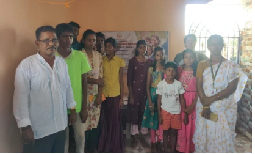

Computer Literacy

Empowering Through Technology
Date: 11th August 2024
Venue: Vattampakkam, Tamil Nadu, India
ACM VIT Chennai conducted a special outreach program titled Computer Literacy, involving 25 participants.
Some Tamil-speaking volunteers from the college, along with 2–3 club coordinators, visited a village school to introduce essential computer concepts.
They engaged with the students by teaching basic computing and showcasing small, interactive computer games to spark curiosity and learning.
The initiative aimed to build digital awareness and confidence among young learners from rural backgrounds.
